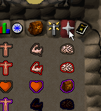
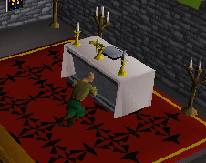

|
Prayer
Using Prayers
| As well as using magic spells you can also pray to the gods of RuneScape to give you an advantage. To view the available prayers, select the prayer icon from your interface. You can see what each prayer does by moving your mouse over the icon.
The list of prayers shown will light up when you are at the appropriate level to use them. If the icon for the prayer is darkened then you are not at a high enough level to use that prayer.
|
 | Each of the prayers can be turned on or off individually. Whilst a prayer is in use, your player will be given an advantage depending on the prayer. To activate a prayer just left click on it. The icon will light up to indicate the prayer is active. Click on the prayer again to deactivate it.
| Whilst you have prayers active your prayer-points will slowly drain down to zero. The more prayers you use at once, and the more powerful they are, the faster your points will drain. When you run out of prayer-points all the effects will be deactivated, and can't be used again until you recharge your prayer-points.
To recharge your prayer-points you must find a church in the game, and left click on the altar to recharge. You are then ready to use the different prayers again. |
 |
To use the prayers for longer, and to use the higher-level prayers in the game you need to increase your total prayer-points. You do this by burying bones from monsters you kill. Take the bones, and then left click on them in your inventory to bury them. You need to bury quite a lot of bones to advance a level, but luckily they are quite easy to come by.
The Monastery
Players with a prayer level of 31 or greater may enter the Monastery located west of Edgeville.
Inside they will find an altar that when prayed at will give a temporary prayer boost. Also players will be able to get their holy symbols enchanted by Brother Jered, as well as find some monk's robes to take.
|